← Район · Каталог деталейСеверные дачи · визуальная переработка
Восемь ориентиров и игровые кадры из тех же секторов. Это сравнение художественной цели с фактической сборкой, а не изображения, выданные за игровой рендер.
Северные участки
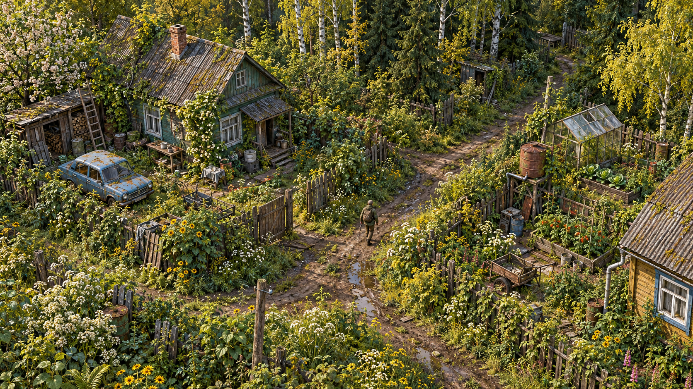
Художественный ориентир Кадр из версии 0.5.0 · 2429, 1300
Кадр из версии 0.5.0 · 2429, 1300Берёзовая улица
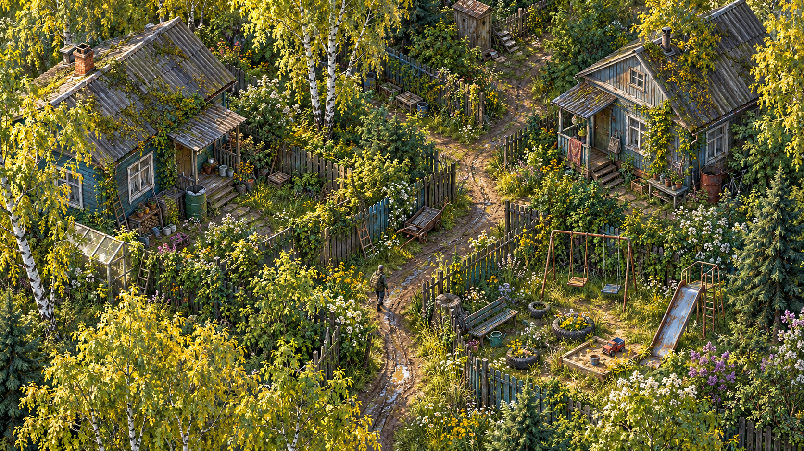
Художественный ориентир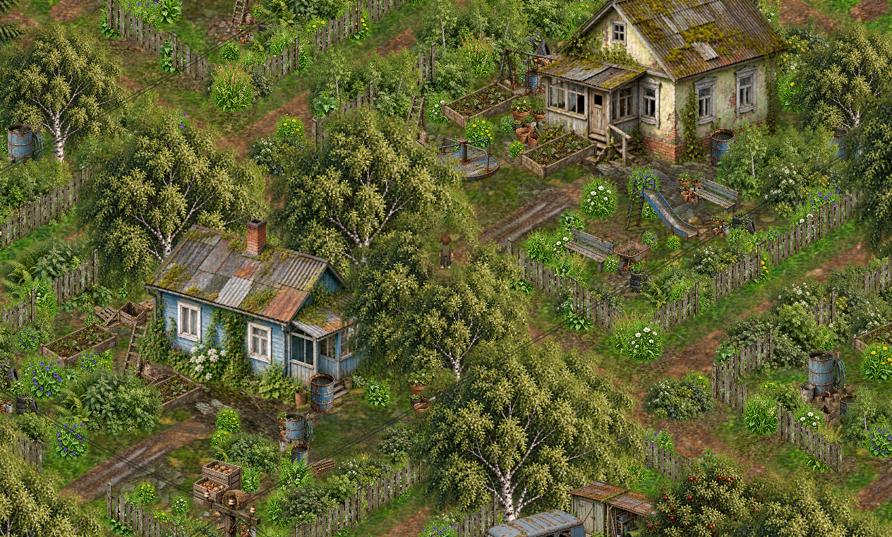
Кадр из версии 0.5.0 · 3269, 1720Старые дачи
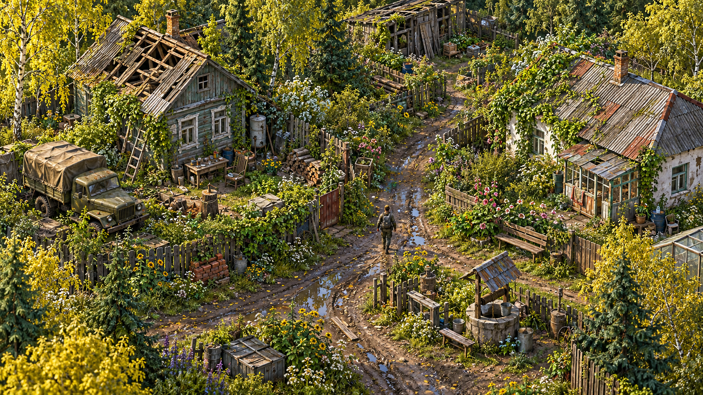
Художественный ориентир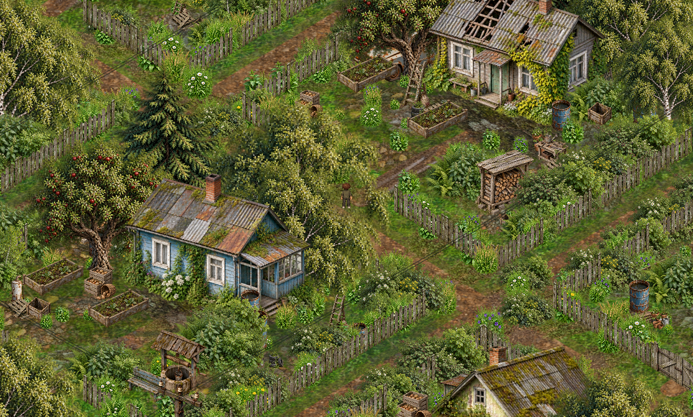
Кадр из версии 0.5.0 · 4109, 1720Яблоневые сады
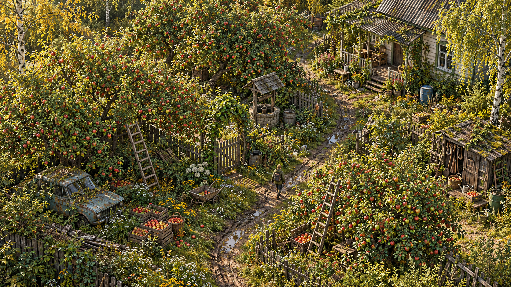
Художественный ориентир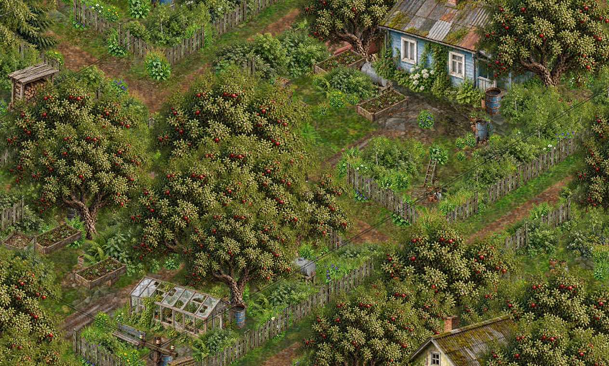
Кадр из версии 0.5.0 · 5369, 1720Заброшенные участки
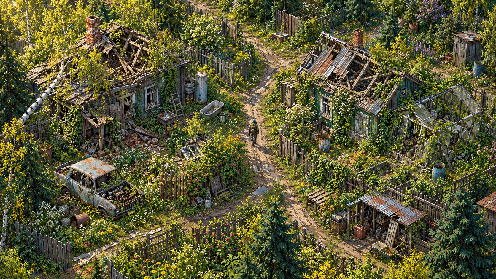
Художественный ориентир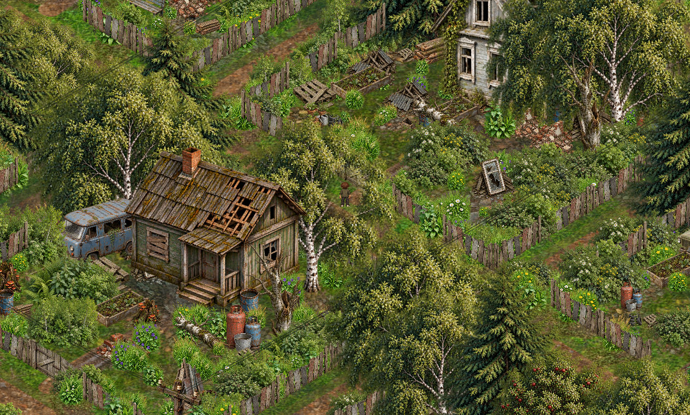
Кадр из версии 0.5.0 · 2429, 2980Дачные сараи
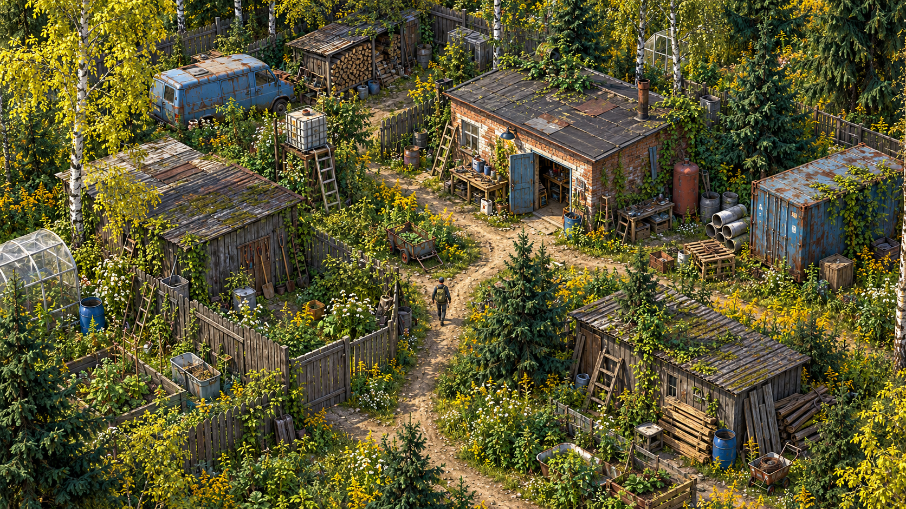
Художественный ориентир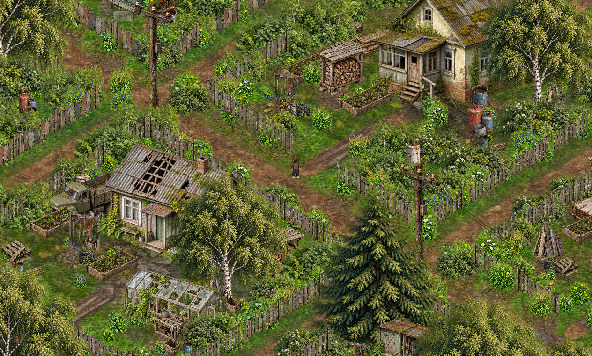
Кадр из версии 0.5.0 · 3269, 3400Южный въезд
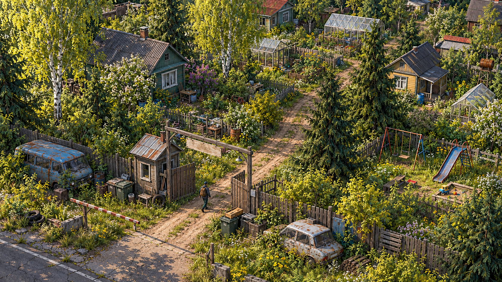
Художественный ориентир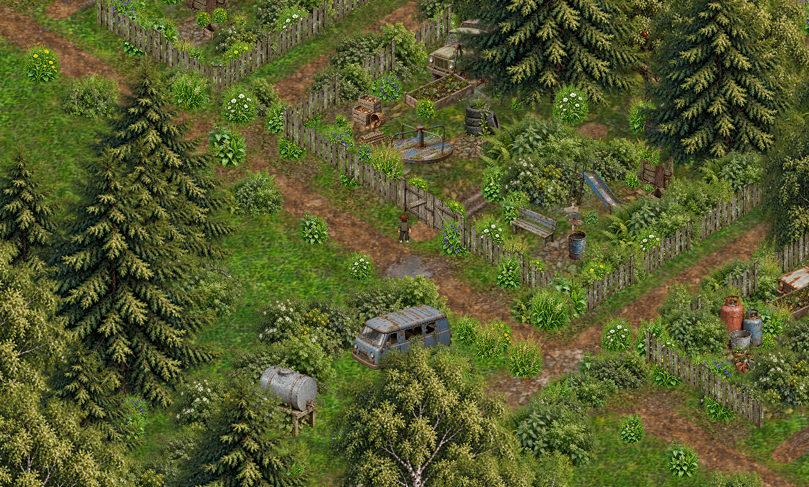
Кадр из версии 0.5.0 · 4529, 4240Тепличный сектор
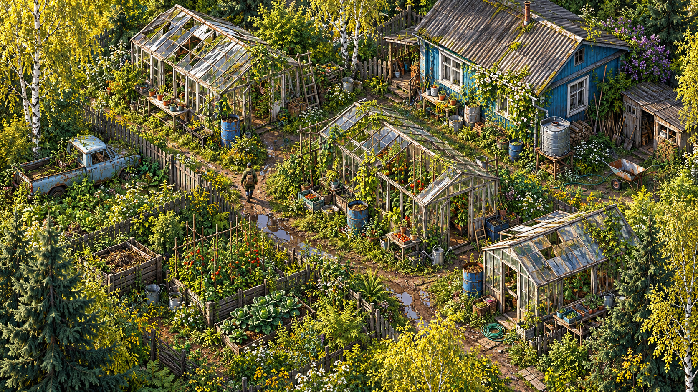
Художественный ориентир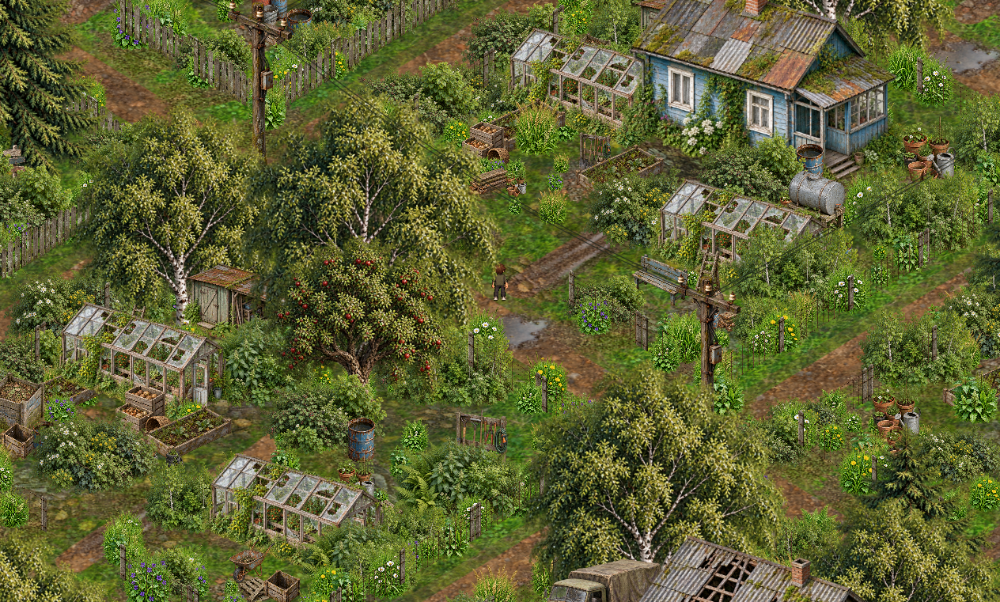
Кадр из версии 0.5.0 · 5369, 3400Промпты и план